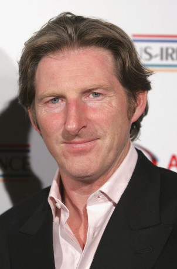

#9221 Ein Verborgenes Leben
Alternativ: The Secret Scripture

 IMDB-Wertung: 6.7 / 10
IMDB-Wertung: 6.7 / 10  Metascore: 0
Metascore: 0 
Als Dr. Grene (Eric Bana) in der Nervenheilanstalt Roscommon seinen neuen Job als Chef der Psychiatrie antritt, bekommt er es gleich mit einer Herkules-Aufgabe zu tun: Er soll die Abwicklung der Einrichtung leiten und entscheiden, welche Patienten in andere Institute überführt werden sollen und welche unter Umständen entlassen werden können. Ein “Fall” weckt sein besonderes Interesse: Die irisch-stämmige Roseanne McNulty (Vanessa Redgrave) ist kurz vor ihrem 100. Geburtstag und fristet nun seit nahezu 50 Jahren ihr Dasein hinter den Mauern von Roscommon. Weshalb wurde sie damals eingeliefert und niemals entlassen? Einblicke in die Akte und in ihr heimlich geführtes Tagebuch fördern das düstere Sittenbild eines streng katholisch geprägten Irlands in der Zeit zwischen den zwei Weltkriegen zutage, das keinen Platz für die Schönheit einer Frau hatte (nun gespielt von Rooney Mara), sondern darin vielmehr eine Bedrohung sah, die es schließlich wegzusperren galt.
Jahr: 2016
Dauer: 108 Minuten
FSK: 12
Land: Irland Studio: Wild BunchTonspuren: DTS - ,
Untertitel: Deutsch, Englisch,
Auflösung: 1080p (1920x808) Größe: 4997 MB
Genre: Drama, Liebe
Regisseur: Jim Sheridan
Drehbuch: Sebastian Barry
Soundtrack: Brian Byrne
Darsteller:
 Theo James als Father Gaunt
Theo James als Father Gaunt Rooney Mara als Rose
Rooney Mara als Rose Aidan Turner als Jack Conroy
Aidan Turner als Jack Conroy Eric Bana als Dr. Grene
Eric Bana als Dr. Grene Vanessa Redgrave als Lady Rose
Vanessa Redgrave als Lady Rose Jack Reynor als Michael McNulty
Jack Reynor als Michael McNulty Susan Lynch als Nurse
Susan Lynch als Nurse Tom Vaughan-Lawlor als McCabe
Tom Vaughan-Lawlor als McCabe Pauline McLynn als Anne McCartney
Pauline McLynn als Anne McCartney-  Adrian Dunbar als Dr. Hart
- Omar Sharif Jr. als Daniel O'Brien
- Charlie Kelly als Beau
- Elva Trill als Pregnant Woman
- Nika McGuigan als Chrissie
- Laurence O'Fuarain als Detective
- Brian Fortune als Psychiatric Analyst
 Lesa Thurman als Nurse O'Donnell
Lesa Thurman als Nurse O'Donnell- Geraldine McAlinden als Sister Mary
- Antony Acheampong als G.I Grove
- Enda Oates als Dermot
- Ria Murphy als Tobacco Woman
- Jane Herbert als Pregnant Woman
- Ian Meehan als Detective
 Mark Quigley als Doctor (uncredited)
Mark Quigley als Doctor (uncredited)- John Connors als Joe Brady
- Aisling O'Sullivan als Eleanor Prunty
- Annabell Rickerby als Whispering Woman / Tobacco Room
- Sheila Moylette als Angela
- Ed Murphy als Son
- Aonghus Og McAnally als Estate Agent
- Shimmy Marcus als Doctor
- Tony Doyle als Dessie
- Michelle Ward als Pregnant Girl #4
- Colin Maher als Hospital Security Guard
- Nigel Davey als Hangman
- Faolan Barry als Traveller boy
- Beibhinn Jones als Mental Patient
- Ryan McAllister als Paddy
- Scott Murray als Checkpoint Soldier
- Noreen Gorman als Nurse with Whistle
- Grant O'Hara als Eamonn
- Eiméar Howard als Psychiatric Nurse (uncredited)
Datei: X:\2016(N-Z)\Verborgenes Leben, Ein (2016, FSK12, 1920x808).mkv seit 20.07.2018
Festplatte: HD 2016(A-Z)
 Es gibt insgesamt 182 Filme in der Gruppe '2016(N-Z)'
Es gibt insgesamt 182 Filme in der Gruppe '2016(N-Z)'